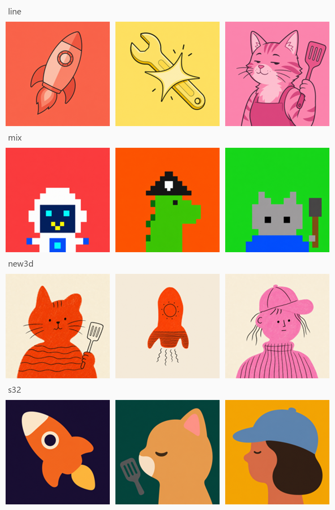
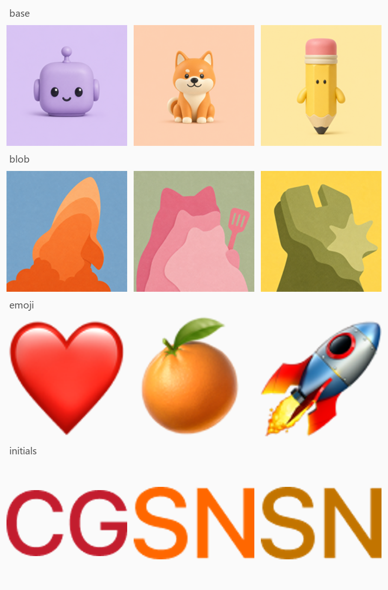

大多数AI界面都围绕「用户操作的一次性会话」组织：开场setup、展开、聊完就结束。xAI团队做Grok Bot时的中心问题却是：当对一个会在一次会话之外一直存在、并且能自己扛住责任走远的agent做设计，界面该长什么样？
答案是把产品从「会话历史的列表」改造成一串有姓名、有状态、有自己电脑的角色名单：Bot的主对象不是聊天，而是你自己可以随时回来找它、它还能被你自己派活。这篇把背后的design推演和取舍完整讲了一遍，值得做agent/产品的人精读。
开头要思考的是界面如何塑造用户与agent的关系。过去界面以用户操作为中心的聊天session居多：每个session从setup开始、在用户眼皮底下一段段展开、会话结束就终止。Grok Bot的目标是设计一个「在一次会话之外仍持续、并能自己承担责任」的agent，这要求重想界面里的一些基本对象和信号：哪些该留在侧栏、agent如何展示进度、它的工作在什么时候变得可见。
AI产品一两年攒下了一大堆词：chat、session、model、context window、memory、system prompt、project、skill、connector、agent、tool、sandbox、permission、automation……每个都描述系统真实的一部分。可若把每一个都当成独立的产品概念去暴露，等于要求用户理解超出所需的东西。团队于是反着问：一个人和agent协作，到底最少需要哪几个概念？
反复收敛到五个：Bot：带自己身份、记忆、运行时和工具的持久agent；Chats：与Bot协作的对话界面；Prompts：给Bot上下文或指令（一次性、存成Skills、或按Routine自动触发）；Tools：让Bot通过软件/API/connector/shell/computer use获取信息或采取行动；Artifacts：Bot创建或改写的文档、设计稿、代码、数据等持久产出。除此之外的全可以藏在接口背后，直到用户有理由关心它。下一个问题才是：这五个对象里，该用哪个来组织产品。
聊天是「用完即弃」的：为解某个问题开一场对话，推下去，一周后又起新的；很少有人回头看最近五次之外的对话。当交互单位只是一次提问时这很合理；但当对话另一端应该认识你、记得之前的活、并且长期替你负责任时，这种形态就怪了。
所以在Grok Bot里，主对象是Bot而不是会话。它有名字、头像、头衔；记得和你聊过什么；有自己的一台电脑和工具。明天你回来，回来找的是同一个Bot。一个典型侧面：用户可能对某个Bot这样布置与追问：“Project Acme：Draft a follow-up after Friday’s call / Rewrite the pricing one-pager / What should I ask in the security review? / Build a champion map from my call notes / 练demo时模拟刁难 / 帮我横向比这三张竞争对手deck……” ： 这些是持续的责任，不是一场问答。
一旦Bot是「长期维护的对象」而非「临时起的会话」，它在产品里怎么出现就要一次回答三个问题：这是谁？此刻在做什么？我需要知道多少？
「这是谁」：名单只有在能扫读时才成立。名单越长，越不该让用户每次开产品都读一遍名字，要能余光从头像认出是谁。同时又要保持avatar足够一致的「一个系统感」。团队横跨插画、动画、游戏与界面系统的角色体系做了大范围探索：从字母initials、emoji，到像素画、水彩、黏土(claymorphism)、Noritake风线条、剪影、identicon。大多数方案只偏科一边：水彩/黏土给单个Bot很足的性格，却在侧栏小尺寸下细节过载；更朴素的体系放得进界面，却让各Bot显得可替换。
最终收口的体系：基础构造保持一致（简洁形状 + 会表达情绪的眼睛），靠受控的差异与配件制造区分度：单个Bot一眼可辨，又不至于像来自不同视觉世界的杂交。下面的两张表格图就是不同风格族(line / mix / 3D / pixel-s32，以及base / blob / emoji / initials)各自的探索成片。

头像成了Bot的身份后，顺理成章也是显示状态最自然的地方。Bot可能idle、thinking、working、waiting/blocked、done。若每种状态都配一个独立指示灯，就又多一层UI要用户理解。于是团队探索让头像自己扛多少生命周期：静止时calm且略带好奇；有活来了先「接单」；开工就进入状态、动起来；等别人或需要帮助时动作再变；完工后归于平静。
「我需要知道多少」是平行的问题：是只播“三个点动画”，还是一步步全展开？“三个点”信息太稀，用户分不清是在干活还是卡死。可一旦展示「一步短描述」，人看完第一步就会想看后面的每一步：用户研究显示他们其实是为「确认它还活着、走在正道上」而要这些细节。最终设计让头像的动效先说“我在忙”，要准话就hover看它当前动作：`Environment ready 387ms · Edited math.ts +14 −10 · Ran focused tests npm test · Ran type-check npm run · Searched code “toFixed” · Read AGENTS.md · Edited math.test.ts +6 −2 · Ran full suite 212 passed · Committed fix: clamp NaN`。

每个Bot都有一台自己的电脑：能上网、碰文件、跑软件。这又带来界面问题：那台电脑要多「可见」、用户什么时候该能接管？团队试了四种摆法：浮动窗(好够到但盖住对话)、并排(工作一直可见、让人想一直看)、Modal(检查方便但把Bot的工作空间当临时打断)、全屏(给电脑最多地方却把对话整个挤走)。电脑越抢眼，产品就越像在怂恿用户盯着它。
结论是三档进入权，让人能「进入它的工作空间」而不至于被拽进去替它操作：状态：电脑在干活时标题栏图标变紫；预览：点开侧边钉住的panel，边聊边围观不离开对话；接管：Bot需要帮忙时，可全屏打开、由你接手、再交还。
每个Bot电脑还配了随一天时间变色的壁纸：清晨亮、夜里暗，让它自己有“时间感”，感觉上是独立于你桌面的另一个空间。下面的横条就是同一套壁纸在不同时段的档位。
早期版本的Grok Bot几乎每问必答一大段prose：讲五天预报不如直接给预报、把一组任务口述出来而不是铺成看板。用户自己还得重建结构。于是他们把「回应的形式」也当成答案的一部分：该用文字就用文字，文字装不下信息结构时就用嵌入的卡片与widget(New email等)。对动作也一样：当Bot新建Routine、改设置、或给另一个Bot发消息时，事件可以直接出现在transcript里，想细看再展开。
结果是一条「异构transcript」：对话、系统事件、可交互对象与可视化共享同一条时间线。这是它跟“聊天记录”在人眼中最大的区别：它记录的不止是你说了什么，还有当时机器实际替你做了什么。
当用户造了好几个Bot，产品还得组织它们怎么协作：哪个角色的上下文是什么、工作重叠时怎么共享上下文、怎么协调又不把用户变成总调派。随着有人真的创建更多Bot，一个模式浮现：有人建一个chief-of-staff Bot去协调一群specialist：只要对那一个发话，不必逐个查岗再给自己排活。
角色化还逼他们定「每个角色该知道多少」：法律Bot需要的是某个争端完整的历史，而财务Bot要的是多年的财务记录。把这些并进一个大memory反而更难给各Bot喂到与它工作相关的信息。
所以他们分开规定：能力(Tools/Skills)放账号级：很多Bot都可能要上网、碰文档、发邮件；记忆与Routines放Bot级：因为那是某特定角色长期知道并做了什么。用一句话：能力可以被广泛共享，上下文只跟着需要它的那个角色走。跨角色那些活由Group chat承载：为项目/团队提供共享上下文，同时每个Bot保留自己的专精记忆；设计师、工程师、PM、数据科学家可以在同一场对话里互相交接工作并共享项目所需。
协调手段他们也都权衡过：dashboard、assignment board、显式handoff控件：每一样都在给用户加协调的活。最终用的是「协调型Bot」处理例行路由、遇到要判断的决策才把用户拉进来。
大多agent会话是由用户发prompt才开始，这让再持久的Bot也只在有人激活时才动。Routine解决的问题正是这个：用户把「一件长期该做的事」交给Bot，让它按计划或响应事件自动跑：盯一个行业、每天早上准备briefing。用户只需定义一次，之后由Routine在合适的时刻启动Bot。
团队最初把Routine当次要配置；随着它越来越成为自主工作的核心，就把它搬进Bot的主界面：transcript里能看到这条routine跑了什么、在哪看结果或处理异常。时间触发器(每天8点、工作日8点、每周一9点、每月1号8点、每30分钟……)和事件触发器(issue创建/事件、incident触发、PR打开/合并/关闭、推main、检查失败、加bug标签、含 /fix的评论、review approved、thread结、deploy workflow失败、webhook POST、新消息、reaction、channel建了dev/design、issue状态进入In Review/Done、周期结束……)都会成为启动点。
这反过来改变了conversation的角色：一条prompt能起会话，一个schedule、一个事件、甚至另一个Bot也能。时间一长，越来越多的活会在用户根本不在场时就开工。
收尾阶段，大部分设计工作其实是“拿掉东西”：删除窗口与面板控件、computer-view选项、agent元数据；并给产品设了很实际的量级边：约每账号50个Bot、每组对话最多6个。每个决定都回到同一个问题：这到底是在帮人分派，还是给人又多添一样要管的？
“操作一个AI”和“委托给一个同事”之间的界线会随模型变强一直移动。Grok Bot反映的是xAI认为它今天所处的位置：这也是从最初探索到发布整条线一直在找的那条分界线，以及让界面能跟着它一起变：当agent接过越来越多责任，界面应该问这个人要得越来越少。
参考：https://x.ai/news/designing-grok-bot